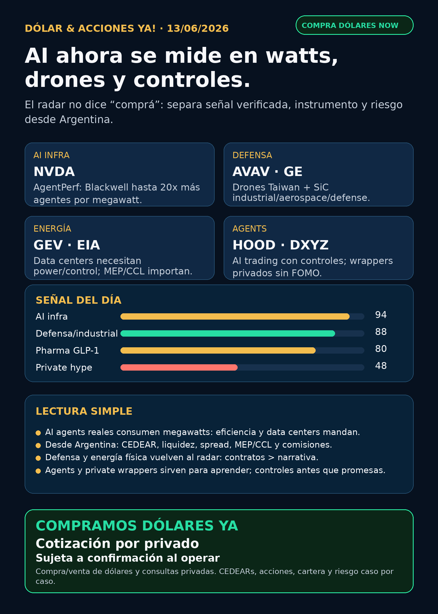

Dólar & Acciones YA!
AI infra se mide por agentes por megawatt; defensa/drones y energía industrial vuelven al centro; agents financieros y private wrappers sirven para educación, no FOMO.
DÓLAR · CEDEARs · ACCIONES · RIESGOServicio privado por mensaje. Cotización de dólar sujeta a confirmación al operar.

Audio suspendido
Por instrucción vigente de Charly del 05/06/2026, esta edición no genera ni adjunta voz/TTS. El reporte completo queda en texto y pack descargable.
Links útiles
Dólar & Acciones YA! — 13/06/2026
Reporte educativo para entender dólar, acciones, CEDEARs, energía, AI, pharma, defensa, space y riesgo desde Argentina. Ordenado por valor educativo y señal de radar, no por recomendación de compra.
1. Lectura simple del día
La lectura simple: AI dejó de ser sólo “modelo lindo” y se volvió infraestructura medible. NVIDIA ya habla de agentes concurrentes por megawatt; GE Vernova habla de electricidad/control para data centers; AeroVironment y GE Aerospace muestran defensa, drones y materiales industriales; Robinhood abre agentes de trading con controles; y DXYZ vuelve a recordar que private markets son wrappers, no acceso limpio y barato a SpaceX/OpenAI.
En criollo: hoy el radar mira capacidad física, energía, defensa, controles y vehículo de inversión. Buena empresa ≠ buena inversión al precio actual ≠ buen instrumento desde Argentina ≠ buen tamaño en cartera.
2. Tesis central
La tesis de hoy es: el segundo filtro de AI es rendimiento por watt, control operativo y acceso al instrumento correcto.
- Para AI infra, no alcanza con decir “más GPUs”: importa cuántos agentes reales corren por megawatt, red, memoria, data center, cooling y energía.
- Para defensa/aeroespacial, no alcanza con narrativa geopolítica: importan contratos, integración, supply chain, backlog y márgenes.
- Para agentes financieros, no alcanza con “un bot opera solo”: hacen falta permisos, activity feed, P&L, desconexión, aprobaciones y límites de riesgo.
- Para Argentina, no alcanza con querer el ticker: importan CEDEAR, ratio, CCL/MEP, spread, comisiones, liquidez y horario local.
3. Ranking educativo por calidad de señal — no es orden de compra
1) NVIDIA / NVDA — AI infra medida por agentes por megawatt
Qué pasó: NVIDIA publicó que AgentPerf, benchmark de Artificial Analysis para workloads agentic AI, mostró a GB300 NVL72 corriendo hasta 20 veces más agentes por megawatt que NVIDIA Hopper/H200.
Por qué importa: esto cambia la conversación. Si AI agents empiezan a ser producto real, el cuello de botella no es sólo “tokens por segundo”; es costo eléctrico, eficiencia, concurrencia, networking, memoria y operación de data centers. Para NVDA, fortalece el moat de sistema completo — GPUs, racks, networking y software — pero también sube la exigencia de valuación.
Estado: señal fortalecida / en radar. No es recomendación de compra.
Riesgo: valuación, concentración de clientes, supply chain, China/regulación, competencia custom silicon y posible normalización de márgenes.
Fuente primaria: https://blogs.nvidia.com/blog/nvidia-blackwell-agentperf-artificial-analysis/
2) AeroVironment / AVAV — drones, Taiwan y guerra física
Qué pasó: AeroVironment anunció MOU con Ubiqconn de Taiwan para desarrollar un common controller ecosystem para el programa indígena UAS de Taiwan.
Por qué importa: esto es defensa real, no “AI de powerpoint”. AVAV combina drones, loitering/precision strike, counter-UAS, BlueHalo y capacidades space/cyber/directed energy. La señal fortalece el carril de guerra física y autonomía militar, pero sigue siendo high beta.
Estado: señal fortalecida / en seguimiento.
Riesgo: integración de adquisiciones, timing de contratos, presupuesto público, geopolítica, margen y valuación.
Fuente primaria: https://www.avinc.com/2026/06/11/av-signs-mou-with-taiwans-ubiqconn-to-develop-common-controller-ecosystem-for-taiwans-indigenous-uas-program/
3) GE Vernova / GE Aerospace — electricidad, control y materiales para AI/defensa
Qué pasó: GE Vernova publicó contenido técnico sobre power/control systems para data centers AI complejos. GE Aerospace anunció colaboración con Wolfspeed para acelerar adopción de high-voltage silicon carbide en industrial, aerospace y defense.
Por qué importa: AI necesita electricidad estable, conversión, control y equipos. Defensa/aeroespacial necesita materiales, motores, electrónica de potencia y supply chain. Este carril no es tan viral como software, pero puede tener moat industrial.
Estado: en radar / señal industrial fortalecida. Separar GE Aerospace (GE) de GE Vernova (GEV).
Riesgo: valuación, ejecución industrial, supply chain, ciclos de capex, contratos largos y sensibilidad a tasas.
Fuentes:
- GE Vernova: https://www.gevernova.com/news/articles/better-brains-meet-engineer-helping-power-complex-new-ai
- GE Aerospace/Wolfspeed: https://www.geaerospace.com/news/press-releases/ge-aerospace-and-wolfspeed-collaborate-accelerate-high-voltage-silicon-carbide-sic
4) Robinhood / HOOD — agents financieros, pero con controles o no sirve
Qué pasó: Robinhood anunció Agentic Trading y Agentic Credit Card: clientes pueden conectar agentes AI con cuenta dedicada, activity feed, P&L, desconexión, previews/aprobaciones manuales y disclosures de riesgo.
Por qué importa: esto es relevante para el carril “AI trading agents”. La señal buena no es “un bot te hace rico”; la señal buena es que una plataforma regulada empieza a diseñar permisos, ledger y controles. Sin eso, agents financieros son casino con interfaz linda.
Estado: radar educativo / fintech en seguimiento.
Riesgo: regulación, errores de agentes, suitability, seguridad, reputación, monetización y defaults de permisos.
Fuente primaria: https://robinhood.com/us/en/newsroom/robinhood-is-now-open-to-agents/
5) Novo Nordisk / NVO — GLP-1 oral sigue fortaleciendo pharma
Qué pasó: MHRA aprobó en UK el primer GLP-1 en tablet para weight loss/weight management: semaglutide/Wegovy oral. La propia fuente aclara que es prescription-only y que no está disponible vía NHS al momento del comunicado.
Por qué importa: una pastilla reduce fricción contra inyectables y puede ampliar mercado. Pero no equivale a revenue inmediato: faltan precio, cobertura, supply, adopción y respuesta de Lilly/AstraZeneca.
Estado: señal fortalecida / pharma en radar.
Riesgo: valuación, pricing, cobertura, competencia, seguridad, capacidad productiva y presión política sobre medicamentos.
Fuente primaria: https://www.gov.uk/government/news/first-glp-1-tablet-for-weight-loss-approved-in-the-uk
6) DXYZ / private markets — exposición educativa, no FOMO limpio
Qué pasó: Destiny Tech100 se presenta como closed-end management investment company con cartera de private tech. La página de holdings muestra exposición visible a nombres tipo SpaceX/OpenAI/Anthropic en el ecosistema private-tech, pero eso no convierte al instrumento en “comprar SpaceX directo”.
Por qué importa: sirve para enseñar la diferencia entre empresa privada extraordinaria y wrapper público con NAV, premium/descuento, fees, liquidez, activos restringidos y valuación de Level 3.
Estado: radar educativo / no accionar sin NAV-premium-liquidez actualizados.
Riesgo: premium alto, baja transparencia diaria, liquidez, fees, valuación privada, lockups y confusión comercial.
Fuente: https://destiny.xyz/tech100
4. Capa Argentina — dólar, MEP, CCL y CEDEARs
Referencias públicas consultadas el 13/06/2026 alrededor de las 08:47 AR:
- BlueLytics oficial venta: $1.453,00. Última actualización: 2026-06-12T19:45:59.59414-03:00.
- BlueLytics blue venta: $1.460,00. Última actualización: 2026-06-12T19:45:59.59414-03:00.
- CriptoYa MEP AL30 24hs: $1.448,20. Timestamp: 12/06 16:56 AR. Puede venir de cierre previo; no venderlo como cotización intradiaria de broker.
- CriptoYa CCL AL30 24hs: $1.495,28. Timestamp: 12/06 16:56 AR. Puede venir de cierre previo.
- CriptoYa USDT venta: $1.499,00. Timestamp: 13/06 08:47 AR. Referencia cripto, no reemplaza broker ni mercado regulado.
Traducción en criollo:
- MEP: forma de dolarizar vía bonos; puede tener parking, spread, comisiones y diferencia compra/venta.
- CCL: tipo de cambio implícito que pega en CEDEARs y acciones extranjeras miradas desde Argentina.
- CEDEAR: no es la acción directa de Estados Unidos; tiene ratio, liquidez local, spread y horario propio.
- Spread: diferencia entre comprar y vender. Si es ancho, entrás perdiendo.
- Buena empresa ≠ buena operación: antes de mover plata real importan precio, horizonte, tamaño, riesgo y liquidez.
5. Precios de referencia — contexto, no fundamento
Yahoo chart endpoint se usó sólo para contexto aproximado de último cierre disponible, no para fundamentals. Último timestamp de mercado observado: 12/06/2026 10:30 AR en el endpoint consultado. Referencias: NVDA USD 205.19, AVAV USD 170.58, GE USD 335.30, GEV USD 940.66, HOOD USD 93.19, DXYZ USD 28.97, NVO USD 43.88, AAPL USD 291.13, RKLB USD 102.39.
6. Watchlist base — seguimiento rápido
- RKLB: sigue en radar space/defensa; entrada Nasdaq-100 quedó en auditoría del research nocturno si no hay primaria Nasdaq directa. No perseguir index hype sin precio y liquidez.
- NVDA: señal fortalecida por AgentPerf/Blackwell; moat de sistema completo vigente.
- PLTR: revisado; sin fuente primaria fresca fuerte en esta corrida.
- TSM: foundry crítica; revenue mensual quedó pendiente por bloqueo de fuente primaria, no elevar como claim fuerte.
- MU: memoria/HBM sigue relevante para AI; sin señal primaria nueva fuerte.
- GOOG/GOOGL: cloud, TPUs, Waymo y distribución siguen estructurales; sin señal primaria nueva superior hoy.
- AAPL: Apple Siri AI verificado por Newsroom; vigilar distribución de AI, no moat automático todavía. Fuente: https://www.apple.com/newsroom/2026/06/apple-introduces-siri-ai-a-profoundly-more-capable-and-personal-assistant/
- HOOD: señal educativa fuerte por Agentic Trading con controles; no vender como promesa de rentabilidad.
- TSLA: autonomía/robotaxi revisado; sin señal verificable nueva fuerte hoy.
- ASML: litografía crítica; ASML sí, all-in no. Sin novedad primaria fresca.
- Gold / GLD / GOLD / B: desambiguar siempre. GLD es ETF oro; GOLD suele ser Barrick; Broadcom es AVGO, no B.
- RVI: fondo cerrado/wrapper privado; no operating company. SEC quedó bloqueado por automated-tool; no elevar nuevos números sin collector determinístico.
- SNDK: storage/NAND/SSD para data centers; revisado sin señal nueva central.
- CBRS: radar alto de AI chips si aparece SEC/filing/IPO; requiere concentración de clientes, TSMC, lockups y acceso Argentina.
- AVGO: custom silicon/networking central en AI; sin fuente primaria nueva superior hoy.
7. Energía y farmacéuticas/salud
Energía: EIA sigue como fuente primaria para petróleo/electricidad. GE Vernova refuerza la capa data-center power/control. En Argentina quedan en radar educativo YPF, VIST, Pampa Energía, TGS y Central Puerto; antes de hablar de ejecución hay que mirar precio local, CCL/MEP, liquidez, spread y balance.
Pharma/salud: NVO se fortaleció por Wegovy oral UK. LLY sigue como competidor estructural en GLP-1, pero cualquier claim fresco no verificado queda fuera del titular. AstraZeneca/elecoglipron quedó en auditoría por bloqueo CloudFront/DataDome.
8. Defensa, aerospace, space y physical AI
- Defensa/guerra física: revisado con señal fuerte en AVAV y señal industrial en GE Aerospace/Wolfspeed. RTX, LMT, NOC, GD, HWM, KTOS, BA, ITA/XAR revisados sin señal primaria nueva más fuerte que AVAV/GE.
- Space/orbital AI: RKLB y SpaceX/SPCX siguen en radar. SpaceX/SPCX no es accionable automáticamente hasta efectividad/listing/precio/float/liquidez/acceso Argentina/US. SEC quedó bloqueado en esta corrida; no inventar.
- Autonomous mobility / physical AI: Tesla, Waymo/Alphabet, Uber, Zoox/Amazon y Joby revisados; sin señal verificable nueva fuerte hoy.
9. Radar amplio fuera de watchlist
- AI trading agents: HOOD sirve como caso educativo porque incorpora permisos, cuenta dedicada, activity feed, P&L, desconexión y aprobaciones. Red flag: bots “gratis”, saltar permisos, dinero real sin paper mode, promesas de 10x.
- Private markets: DXYZ sirve para aprender, no para perseguir SpaceX/OpenAI/Anthropic a cualquier precio. Falta NAV/premium/liquidez antes de hablar de accionabilidad.
- Crypto gobernado: sin input nuevo y sin auditoría on-chain. No mezclar tokens virales con acciones/PPI.
10. Red flags / hype para ignorar
- “Blackwell 20x agentes/MW = comprá NVDA ya”: no. Es señal de moat, pero falta precio, valuación, horizonte y tamaño de cartera.
- “Drones/Taiwan = todo defensa sube”: no. Hay que mirar contratos, márgenes, backlog y riesgo geopolítico.
- “Agents de trading = plata automática”: falso. Sin datos correctos, ledger, paper mode, límites y aprobación humana, es riesgo operativo.
- “DXYZ = comprar SpaceX/OpenAI directo”: falso. Es wrapper/fondo con NAV, premium, fees y liquidez.
- “GLP-1 oral aprobado = ventas inmediatas”: no. Faltan cobertura, precio, adopción y supply.
11. Próximo paso concreto
Para decisión humana, mirar hoy:
- NVDA: si el mercado empieza a valorar eficiencia por watt y no sólo venta de chips.
- AVAV/GE/GEV: si aparecen contratos, backlog o guidance que confirmen la señal industrial.
- HOOD: controles reales de agentic trading y reacción regulatoria.
- NVO/LLY/AZN: cobertura, precio y datos clínicos de GLP-1 oral.
- Argentina: MEP/CCL, spreads de CEDEARs y liquidez local antes de mover plata real.
12. Recibo visible de cobertura
Revisado: watchlist base, AI infra/semis, energéticas argentinas, pharma/GLP-1, defensa/aeroespacial, space/private wrappers, fintech/AI agents, autonomía/physical AI y crypto gobernado. Señales fuertes verificadas hoy: NVDA AgentPerf, AVAV/Ubiqconn, GE Vernova/GE Aerospace, HOOD agents, NVO Wegovy oral, DXYZ como caso educativo. Carriles sin señal nueva fuerte: PLTR, MU, TSLA, ASML, GLD/GOLD, RVI, SNDK, CBRS, AVGO, autonomía/Joby/Zoox.
13. Servicio privado
Si querés comprar o vender dólares, invertir en acciones/CEDEARs o revisar una cartera con más contexto, escribime por privado y se ve caso por caso: monto, plazo, riesgo, liquidez, instrumento y tipo de cambio.
Compramos dólares: cotización por privado, sujeta a confirmación al momento de operar.
Disclaimer
No es asesoramiento financiero personalizado. Es research educativo para decisión humana. Antes de comprar, vender o mover cartera, hay que mirar precio de entrada, horizonte, riesgo, liquidez, impuestos, comisiones, broker y tolerancia personal.
Servicio privado
Dólar · CEDEARs · Acciones · Riesgo. Compra/venta de dólares y consultas privadas caso por caso. Cotización sujeta a confirmación al operar.
Seguir el canal de WhatsApp · Web oficial Simulación Uno Finanzas